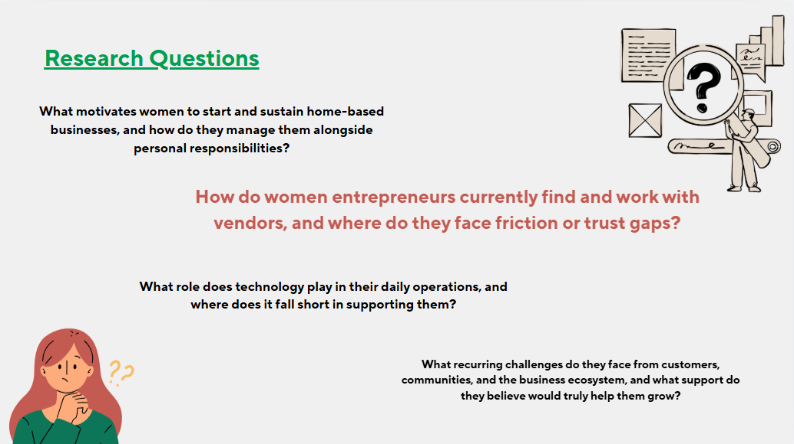
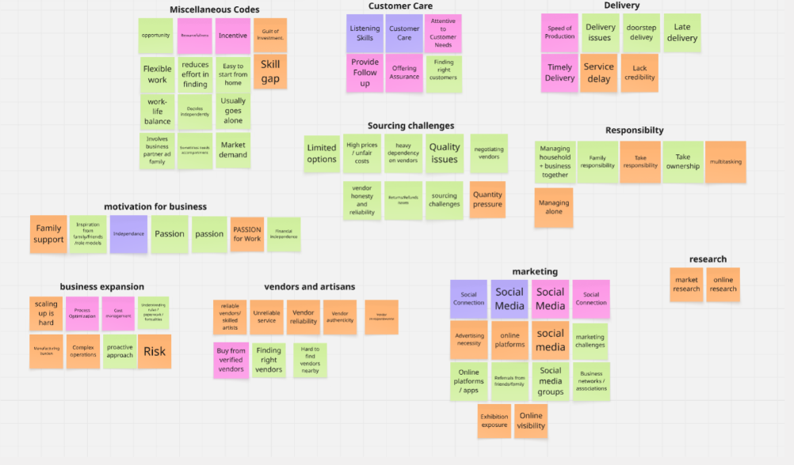
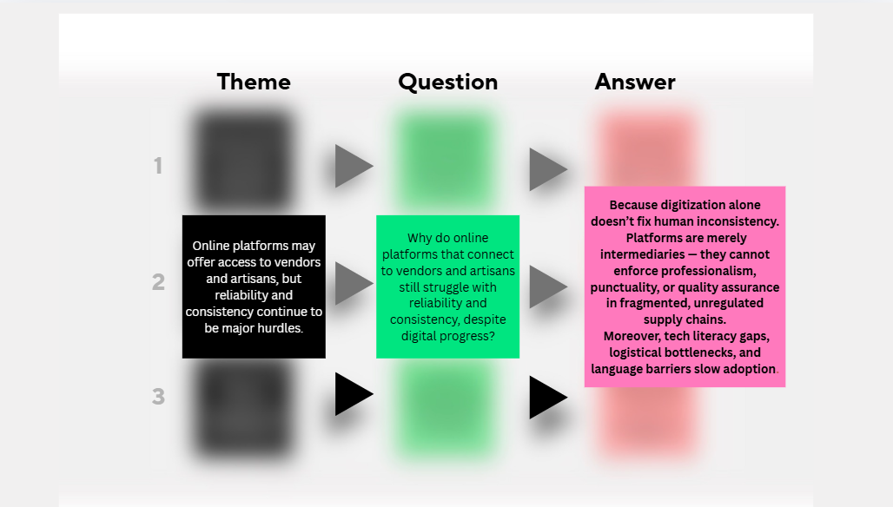
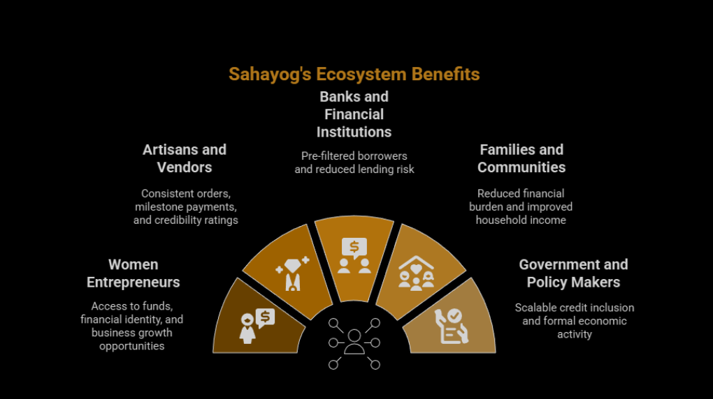
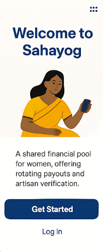
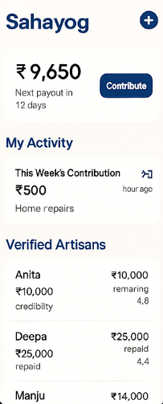
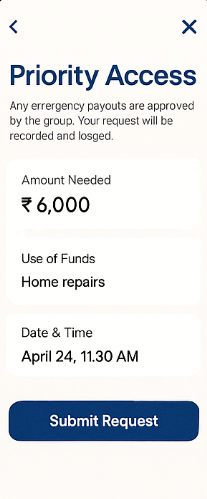

"A phygital cooperative model designed to improve financial access, vendor reliability, and business stability through collective trust and digital transparency."
The Challenge
THE PROBLEM SPACE
Women home-entrepreneurs often rely on informal financial systems and unverified artisan networks. The challenge was to identify where existing support structures were failing and design a system that could bridge the gap.
- No access to small emergency funds
- Trust-based and risky lending with no formal structure
- Unreliable production partners and artisan networks
- Lack of financial credibility for formal banking
- Limited bargaining power as individual entrepreneurs

Research context — women entrepreneurship ecosystems in India
Key Insights
RESEARCH FINDINGS
Research revealed that existing community practices already contain strong trust structures — the design opportunity was to formalize trust without disrupting cultural behavior.
- Rotating savings systems (chit funds) are culturally familiar and already trusted
- Collective contribution reduces individual financial risk significantly
- Trust exists socially but lacks formal documentation and structure
- Transparency builds long-term credibility across the community
- Digitization alone doesn't fix human inconsistency in supply chains

Insight clustering and mapping

Theme → Question → Answer framework
Design Direction
THE SOLUTION: SAHYOG ECOSYSTEM
Sahyog transforms informal savings networks into a structured cooperative ecosystem. The system combines digital transparency with the familiar cultural practice of collective savings, creating stability through collective accountability.
- Shared financial pool with rotating payouts and emergency fund access
- Digital transaction logging creating formal financial history
- Verified artisan network with credibility ratings
- Milestone-based payments for production partners
- Government ID validation + community trust verification

Sahyog's cooperative ecosystem — benefits across all stakeholder groups
How It Works
COOPERATIVE WORKFLOW
The system operates through a clear 4-stage cooperative lifecycle, ensuring every participant has defined responsibilities and benefits at each stage.
- Registration & Orientation — User downloads app, verifies identity, joins group, learns rules
- Regular Financial Contributions — Fixed amounts tracked digitally, auto-debit option
- Pooled Funds Distribution — One member receives pooled funds each cycle with priority requests
- Marketplace Engagement — Members browse verified artisans, escrow for secure transactions
- Credibility Building — App tracks contributions, payments, disputes to assign credibility points

Home — Welcome to Sahyog

Dashboard — Activity & artisan network

Priority access — emergency fund request
Ideation
INTERFACE DESIGN
Designed for simplicity and trust — mobile-first, low-learning interface. The design prioritized familiarity and cultural resonance over novelty, ensuring even users with limited tech literacy could navigate confidently.
- Contribution tracking with visual progress indicators
- Emergency fund request system with transparency
- Artisan credibility profiles with portfolio and ratings
- Transparent financial history — community-visible logs
"A cooperative financial ecosystem that strengthens trust, improves vendor reliability, and enables sustainable business growth without requiring collateral."
↓
Reduced Financial Vulnerability
↑
Increased Operational Stability
↑
Improved Bargaining Power